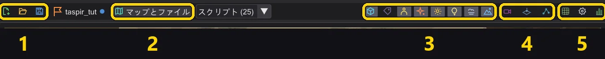
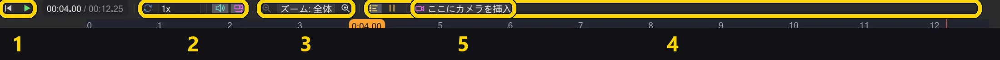
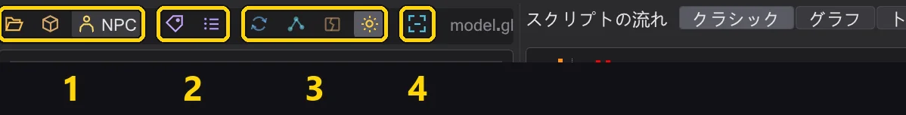

リファレンス
すべてのボタン
プログラムのすべてのボタン(モードバー、操作列、マップのツールバー、配置タイル、インスペクター、カメラ、タイムライン、モデルビュー)とその働き。
プログラムでボタンにマウスを重ねると、同じ説明がツールチップで表示されます。色付きの枠があるボタンはオン/オフを切り替えるスイッチです。
モードバー#
左端の帯で、ウィンドウに表示する内容を切り替えます。スクリプトはどのモードでも同じです。
| モード | 表示内容 |
|---|---|
| イベント | 全コマンドとマクロの イベント 一覧、スクリプトツリー、操作列。スクリプトを書くためのモードです。スクリプトを書く |
| ミッション | ミッション。エンティティ一覧とインスペクター、3D マップとその下のタイムライン。カメラ、キャラクター、エンティティの作業とミッションの保存に使います。マップ |
| モデル | キャラクターモデルとそのアニメーション。アニメーションを探してスクリプトに入れるためのモードです。モデルビューとキャラクター |
操作列(イベントモード)#

| ボタン | 働き |
|---|---|
| 削除 | 選択した行を削除します(Delete)。 |
| 複製 | すぐ下にコピーを挿入します(Space)。 |
| コピー / 切り取り / 貼り付け | クリップボード(Ctrl+C / X / V)。貼り付けは選択範囲の下に入ります。ほかのプログラムのテキストも確認のうえ受け付けます。 |
| コメント化 | 行をコメントにする/元に戻す(Backspace)。 |
| 検索 | 検索ウィンドウ(Ctrl+F)。コマンドや値で検索し、1 つまたはすべてのスクリプトで置換します。開いているすべてのスクリプトで検索・置換 |
| 上へ / 下へ | 選択範囲をブロック内で 1 行移動します(Alt+↑/↓)。 |
| 元に戻す / やり直し | 元に戻す/やり直し。どちらかを右クリックすると履歴全体を表示します。何でも元に戻す。途中の 1 手順だけでも |
| 新規 / 開く | 空のスクリプト/.txt またはコンパイル済みの .ibi を開く。 |
| 最近使用 | 最近開いたファイル(Alt+M)。 |
| 追加読み込み | 別のスクリプトをこのスクリプトの末尾に追加します。 |
| 保存 / すべて保存 / 名前を付けて保存 | このスクリプト、変更されたすべてのタブを保存、または名前を付けて保存。 |
| エクスポート | スクリプトをプレーンテキストとして書き出して開きます。 |
| バックアップ / 復元 | スクリプトの横にコピー(.bak)を保存/それに戻す(Alt+B / Alt+R)。 |
| 型を表示 | ツリーに値の型を表示します。 |
| %g 浮動小数 | 数値を短く表示します。1000.000 ではなく 1000。 |
| マクロを畳む | マクロを 1 行で表示します。 |
| + / - | すべてのブロックを展開/折りたたみます。 |
| コンパイル！ | スクリプトを保存し、ゲームが実行する .ibi を書き出します。成功すると緑、失敗するとメッセージ付きで赤になります。コンパイルとエラーの修正 |
マップのツールバー(ミッションモード)#

| 番号 | 名前 | 機能 |
|---|---|---|
| 1 | ミッション | 新規ミッション・ミッションを読み込む…・ミッションを保存、そして開いているミッションの名前。 |
| 2 | マップとファイル | マップ、ミッションフォルダー、.ent ファイルを開きます。横の スクリプト (N) にマップのスクリプトが一覧表示されます。 |
| 3 | ビューの表示内容 | エンティティ、名前、キャラクター、エフェクト、グロー、動的ライト、フォグ、空。それぞれがスイッチです。 |
| 4 | 視点 | カメラ視点、トップビュー、NPC ウェイポイントウィンドウ。 |
| 5 | ツール | グリッド、表示設定、統計。 |
各ボタンの詳細:
| ボタン | 働き |
|---|---|
 新規ミッション 新規ミッション | 任意のマップでミッションを開始します。プレイヤー開始位置、スクリプトランナー、イントロスクリプト、ミッションフォルダーが作成されます。1 · ミッションを作成する |
 ミッションを読み込む… ミッションを読み込む… | .pk3 からミッションを開きます。マップ、エンティティ、すべてのスクリプト(それぞれタブで)、キャラクター。ミッション |
 ミッションを保存 ミッションを保存 | ミッションをチェックしたうえで、すべてのスクリプトを保存し、.ent を書き出し、コンパイルして .pk3 にまとめます。8 · 保存してプレイする |
 ミッションなし ミッションなし | 開いているミッションの名前。点は未保存の変更があることを示します。マウスを重ねるとフォルダーが表示されます。 |
 マップとファイル マップとファイル | ディスクや .pk3 からマップを、またはミッションフォルダーや単独の .ent ファイルを開きます。 |
| スクリプト | マップのエンティティが参照しているスクリプト。選ぶと開きます。 |
 エンティティ エンティティ | エンティティのマーカーを表示します。移動先、マーク、ランナー、スポナー。 |
 名前 名前 | エンティティとキャラクターの名前をビューに表示します。 |
 キャラクター キャラクター | スクリプトのキャラクターを表示し、タイムラインに合わせて動かします。 |
 エフェクト エフェクト | マップのエフェクト(fx_runner)を表示します。 |
 グロー グロー | glow が指定されたシェーダーのグロー。r_DynamicGlow と同じです。 |
 動的ライト 動的ライト | ライトセーバーやエフェクトの光が壁やキャラクターを照らします。 |
 霧 霧 | ゲームと同じ描画のマップのフォグ。 |
 空 空 | 空。オフにするとマップを外から覗き込めます。 |
 カメラ視点 カメラ視点 | カメラに映るものを表示します。選択中のカメラコマンド、または再生位置のカメラ。作業中にカメラ視点で見る |
 トップビュー トップビュー | 真下を見下ろします。カット高さで天井を隠せます。マップを上から見る |
 NPC ウェイポイント NPC ウェイポイント | NPC ウェイポイントウィンドウ。ネットワークの表示・作成・チェック。NPC ウェイポイント |
 グリッド グリッド | ドラッグや配置のときにエンティティを 8〜64 単位にスナップします。 |
 表示設定 表示設定 | 明るさ、環境光、詳細度、影、アクティブなスクリプトのエンティティの強調表示、そしてゲーム画面(アスペクト比、cg_fovAspectAdjust、フリービューでの枠、プレビューとカメラ視点)。暗いマップを見やすくする |
 統計 統計 | フレームレート、テクスチャ、三角形数、グラフィックカードの情報。 |
配置タイル#
マップの左端の帯。タイルをクリックしてから床をクリックするか、タイルをビューにドラッグします。Shift で複数配置、Esc で終了。エンティティの配置・移動・回転
| ボタン | 働き |
|---|---|
| キャラクター (NPC_spawner) | 出現するキャラクター。NPC_type と名前を設定します。 |
 移動先 (waypoint_navgoal) 移動先 (waypoint_navgoal) | キャラクターが歩いて向かう場所(SET_NAVGOAL)。 |
 カメラ/注視マーク (ref_tag) カメラ/注視マーク (ref_tag) | 向きを持つマーク。カメラ(tag)や注視先に使います。 |
 注視先 (target_position) 注視先 (target_position) | 見る、または狙うための点。 |
 スクリプトランナー (target_scriptrunner) スクリプトランナー (target_scriptrunner) | 使用されたときにスクリプトを実行します。トリガー、プレイヤー開始位置、別のスクリプトから使用されます。 |
| エフェクト (fx_runner) | エフェクトファイル(.efx)を再生します。 |
 サウンド (target_speaker) サウンド (target_speaker) | サウンドを 1 回またはループで再生します。 |
| NPC ウェイポイント (waypoint) | NPC ナビゲーションネットワークの点。 |
| プレイヤー開始位置 (info_player_start) | プレイヤーが出現する場所。 |
エンティティのインスペクター#

| ボタン | 働き |
|---|---|
 そこへ移動 そこへ移動 | ビューをエンティティへ飛ばします。 |
 床に置く 床に置く | ゲームの DROPTOFLOOR と同じように、真下の床に置きます。 |
 複製 複製 | コピーを作ります(選択中のすべてのエンティティ)。ビューで Alt+ドラッグしても同じです。 |
 削除 削除 | 削除します。 |
 アニメート アニメート | ドア、プラットフォーム、船、エフェクト用のアニメーションウィンドウを開きます。可動物のアニメーションと ROFF ファイル |
 元に戻す 元に戻す | 最後のエンティティの変更を元に戻します(エンティティには独自の履歴があります)。 |
 やり直し やり直し | やり直します。 |
 すべてのキー (生) すべてのキー (生) | すべてのキーをプレーンテキストで表示します。 |
| + キー | キーを追加します。 |
| 開く | スクリプトのキーの横:スクリプトを開きます。まだ存在しなければミッションフォルダーに作成します。 |
カメラバー#
カメラを選択するとビューに表示されます。カメラ

| ボタン | 働き |
|---|---|
 移動 移動 | 矢印:ショットを 1 軸に沿って移動。中央の箱:画面の平面内で移動。 |
 回転 回転 | リング:ショットを回転。 |
| ワールド | ワールドまたはローカル:矢印がマップの軸とカメラのどちらに従うか。 |
 前のショット 前のショット | 前のショット。 |
 次のショット 次のショット | 次のショット。 |
| ビューに合わせる | 今見ている位置にショットを置きます。 |
 操縦 操縦 | ショットの中に入って飛ばします。Enter でキーを設定。カメラショットを自分で飛ばす |
| カメラ視点 | カメラ視点で見ます。 |
 カメラプレビュー カメラプレビュー | カメラの視界を隅に小さく表示します。 |
 ここに新しいショット ここに新しいショット | 現在の視点に新しいショットを、選択中のショットの後ろに作ります。 |
| ショットを削除 | ショットを削除します。 |
タイムライン#

| 番号 | 名前 | 機能 |
|---|---|---|
| 1 | 再生 | 先頭に戻る、再生/停止。横の時間表示で秒とフレームを切り替えます。 |
| 2 | 再生設定 | ループ、サウンド、カメラ追従、そして速度リスト。 |
| 3 | ズーム | 表示する時間を増やす/減らす。 |
| 4 | 行 | キャラクターごとの行、動きのない行、wait をブロックで表示。 |
| 5 | ここにカメラを挿入 | 再生位置にカメラショットを挿入します。 |
各ボタンの詳細:
| ボタン | 働き |
|---|---|
 先頭へ 先頭へ | スクリプトの先頭に戻ります。 |
 再生 再生 | シーン(カメラ、キャラクター、サウンド)をゲーム内の時間で再生します。 |
 ループ ループ | 最後まで来たら最初から再生します。 |
| サウンド | タイムラインの再生中にサウンドを鳴らします。ゲームと同じく、ビューが映しているカメラの位置から聞こえます。ゲームと同じ音 |
 追従 追従 | ビューをカメラに合わせて動かします。 |
 ズームアウト ズームアウト | より長い時間を表示します。 |
 ズームイン ズームイン | より短い時間を詳しく表示します。 |
 キャラクター行 キャラクター行 | キャラクターごとに 1 行。それぞれがいつ歩き、話し、行動するか。 |
 動きのないトラック 動きのないトラック | 何も起こらない行も表示します。 |
 wait wait | wait を独立したブロックとして表示します。 |
| ここにカメラを挿入 | 再生位置にカメラショットを挿入します。 |
時間表示をクリックすると秒とフレームが切り替わり、再生ボタンの横のリストで速度を設定します。ブロックをドラッグすると時間上で移動できます。タイムライン を参照。
モデルのツールバー(モデルモード)#

| 番号 | 名前 | 機能 |
|---|---|---|
| 1 | 開く | ディスク上の .glm、アーカイブ内のモデル、またはゲームのキャラクター(NPC)。 |
| 2 | スキンとスケルトン | 別の .skin、別の .gla。 |
| 3 | 視点 | ターンテーブル、ボーン、キャップ、テクスチャ。 |
| 4 | ビューに合わせる | モデル全体を正面から表示。 |
各ボタンの詳細:
| ボタン | 働き |
|---|---|
| .glm を開く… | ディスクから .glm モデルを開きます。 |
 .pk3 から… .pk3 から… | ゲームのアーカイブからモデルを開きます。 |
| NPC | ゲームの全キャラクター。クリックするとゲームと同じ姿で読み込みます。 |
| .skin を開く… | モデル用の .skin を読み込みます。 |
| .gla を読み込む… | 別のスケルトン/アニメーションファイル(.gla)を読み込みます。 |
| ターンテーブル | モデルをゆっくり回転させます。 |
| ボーン | スケルトンを表示します。 |
 キャップを表示 キャップを表示 | 手足の付け根にあるサーフェスのキャップを表示します。 |
| テクスチャ | テクスチャのオン/オフ。 |
 ビューに合わせる ビューに合わせる | モデル全体を正面から表示。 |
| コピー | アニメーション一覧で:アニメーション名をコピーします。 |
| スクリプトへ | そのアニメーションの set ( SET_ANIM_BOTH, ... ) をスクリプトに入れます。キャラクターにアニメーションを再生させる |